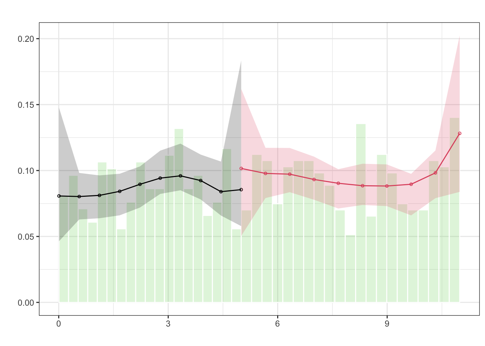
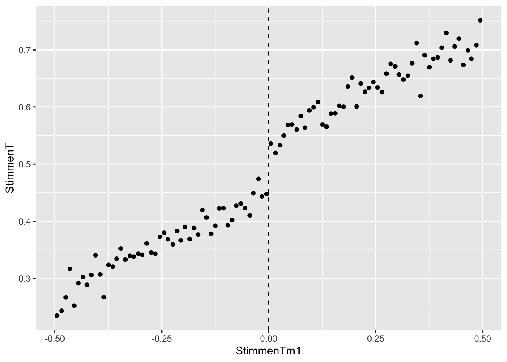
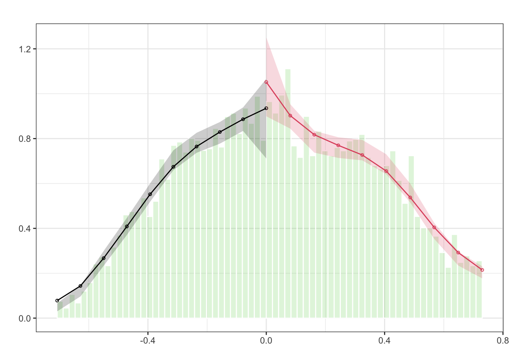
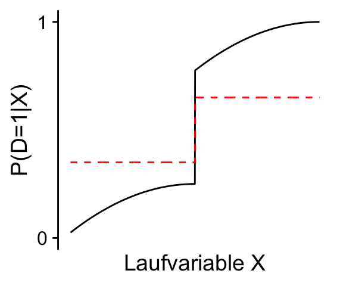
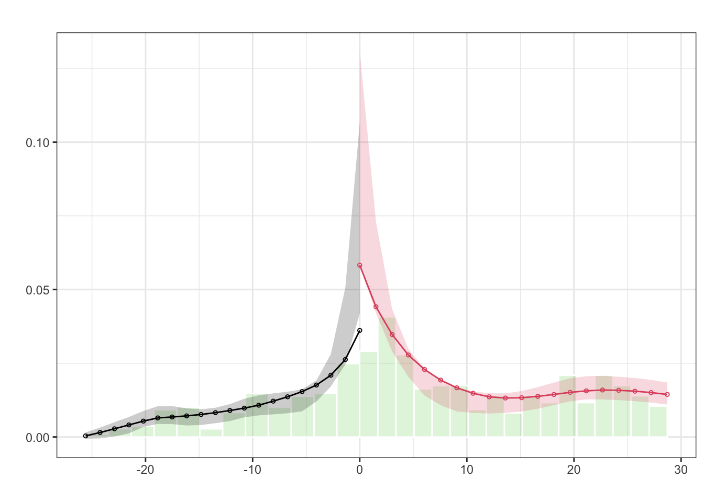
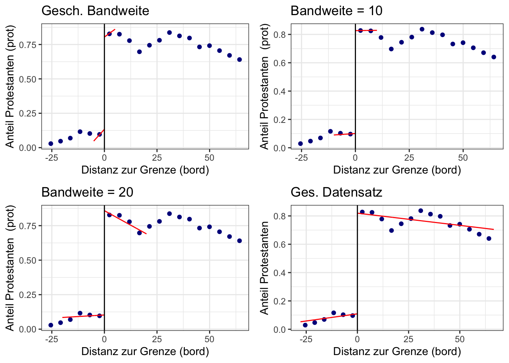

set.seed(1234)
# Anz.Beobachtungen
n <- 750
# Parameter definieren
c <- 5
beta_1 <- .5
beta_2 <- 1.5
beta_3 <- -.15
# Regressionsfunktion definieren
f <- function(X) {
beta_1 * (X - c) + beta_2 * B + beta_3 * B * (X - c)^2
}
# Daten erzeugen
X <- runif(n, 0, 11)
B <- ifelse(X - c >= 0, 1, 0)
Y <- f(X) + rnorm(n, sd = .5)
# Beoabchtungen sammeln
dat <- data.frame(
Y = Y, X = X - c, B = B
)11 Regression Discontiniuty Designs
Regression Discontinuity Design (RDD) ist ein Ansatz für die Schätzung von Behandlungseffekten mit Regression, wenn durch einen experimentell oder natürlich gegebenen Umstand die Behandlung an einem Schwellenwert (\(c\)) einer Laufvariable (\(X\)) sprunghaft beeinflusst wird. Ein RDD-Schätzer wird so implementiert, dass lediglich Beobachtungen mit Ausprägungen von \(X\), die knapp ober- oder knapp unterhalb von \(c\) liegen, berücksichtigt werden. Die zentrale Idee hierbei ist, dass Individuen nahe bei \(c\) im Durchschnitt ähnliche Merkmale aufweisen. Beobachtungen nahe \(c\) sind dann insbesondere hinsichtlich potentieller Backdoor-Variablen vergleichbar, sodass deren problematische Pfade geschlossen sind. Das kausale Diagram in Abbildung 11.1 zeigt den grundsätzlichen Zusammenhang.
RDD isoliert Variation auf dem Pfad Oberhalb C → Behandlung B → Y. Somit können Backdoor-Pfade über \(X\) oder weitere (möglichweise unbeobachtbare) Confounder (\(Z\)) vermieden werden, siehe Abbildung 11.1. Der kausale Effekt wird dabei als (lokaler) durchschnittlicher Behandlungseffekt der Diskontinuität auf die Outcome-Variable (\(Y\)) anhand von Beobachtungen nahe bei c ermittelt.
Hinsichtlich der Beeinflussung der Behandlung unterscheiden wir zwischen Sharp und Fuzzy Regression Discontinuity Designs (SRDD/FRDD). Bei einem SRDD ist die Zuweisung der Behandlung deterministisch, d.h. der Schwellenwert in der Laufvariable ist eine harte Grenze für die Gruppenzugehörigkeit: Die Wahrscheinlichkeit der Behandlung \(p\) springt bei \(X=c\) von \(p=0\) um \(\Delta p = 1\) auf \(p=1\).
Bei einem FRDD ist die Zuordnung in Behandlungs- und Kontrollgruppe nicht perfekt durch den Schwellenwert \(c\) bestimmt: Die Behandlungswahrscheinlichkeit \(p\) springt bei \(X=c\) um \(\Delta p<1\). Im FRDD können grundsätzlich also sowohl behandelte Subjekte als auch Kontroll-Beobachtungen auf beiden Seiten der Diskontinuität vorliegen – die Trennung der Gruppen ist “unscharf”1. Dieser Umstand ist oft in empirischen Studien mit nicht-experimentellen Daten gegeben, wenn es neben der Überschreitung von \(c\) weitere Determinanten der Behandlung gibt (für die wir nicht kontrollieren können). Die Wahl zwischen SRDD und FRDD hängt grundsätzlich vom datenerzeugenden Prozess und der Forschungsfrage ab.
1 Engl. fuzzy.
11.1 Sharp Regression Discontinuity Design
Modell und funktionale Form
Die korrekte Spezifikation der funktionalen Form für ein RDD ist wichtig, um eine verzerrte Schätzung des Effekts zu vermeiden. Die einfachste Form eines SRDD kann anhand der linearen Regression \[\begin{align} Y_i = \beta_0 + \beta_1 B_i + \beta_2 X_i + u_i\label{eq-simpleSRDD} \end{align}\] geschätzt werden, wobei \(B_i\) eine Dummy-Variable für das Überschreiten des Schwellenwertes \(c\) ist, d.h. \[\begin{align*} B_i=\begin{cases} 0 & X_i < c\\ 1 & X_i \geq c. \end{cases} \end{align*}\] Damit ist \(B_i\) eine deterministische Funktion der Laufvariable \(X_i\) und zeigt die Zugehörigkeit zur Behandlungs- oder Treatmentgruppe an. Der Koeffizient \(\beta_1\) misst den Behandlungseffekt.
Das Modell \(\eqref{eq-simpleSRDD}\) unterstellt, dass \(X\) links- und rechtsseitig von \(c\) denselben Effekt auf \(Y\) hat. Diese Annahme ist restriktiv. Eine Alternative ist ein lineares Interaktionsmodell \[\begin{align} Y_i = \beta_0 + \beta_1 B_i + \beta_2 (X_i - c) + \beta_3(X_i - c)\times B_i + u_i.\label{eq:linearSRDD} \end{align}\] Das Modell \(\eqref{eq:linearSRDD}\) kann unterschiedliche lineare Effekte von \(X\) auf \(Y\) unterhalb (\(\beta_2\)) und oberhalb (\(\beta_2 + \beta_3\)) von \(c\) abbilden. Beachte, dass \((X_i - c)\) die um den Schwellenwert zentrierte Laufvariable ist, sodass \(\beta_1\) wie in \(\eqref{eq-simpleSRDD}\) den Unterschied des Effekts von \(X\) auf \(Y\) für Beoabachtungen am Schwellenwert erfasst.
Um unterschiedliche nicht-lineare Zusammenhänge von \(X\) und \(Y\) unterhalb und oberhalb von \(c\) abzubilden, können (interargierte) Polynom-Terme in \(X\) verwendet werden. Häufig wird eine quadratische Regressionsfunktion genutzt, \[\begin{align} Y_i =&\, \beta_0 + \beta_1 B_i + \beta_2 (X_i - c) + \beta_3 (X_i - c)^2\\ &+\, \beta_4(X_i - c)\times B_i + \beta_5(X_i - c)\times B_i + u_i.\label{eq:quadSRDD} \end{align}\] Gelman und Imbens (2019) zeigen, dass Polynome höherer Ordnung zu verzerrten Schätzern und hoher Varianz führen können.2 Die Authoren empfehlen stattdessen die Schätzung mit lokaler Regression.
2 Ursachen sind Überanpassung an die Daten sowie instabiles Verhalten der Schätzung nahe des Schwellenwertes.
Nicht-parametrische Schätzung und Bandweite
Aktuelle Studien nutzen nicht-parametrische Schätzer, die den Behandlungseffekt als Differenz der geschätzten Regressionsfunktionen am Schwellenwert \(c\) berechnen. Um auch nicht-lineare Regressionsfunktionen abzubilden zu können, wird häufig lokale Regression verwendet. Dieses Verfahren liefert eine “lokale” Schätzung der Regressionsfunktionen am Schwellenwert, bei der nur Beobachtungen nahe \(X = c\) für die Schätzung berücksichtigt werden. Hinreichende Nähe wird hierbei durch eine sogenannte Bandweite \(h\) festgelegt, wobei \[\begin{align} \lvert(X_i-c)\rvert\leq h \label{eq:bwc} \end{align}\] das Kriterium für eine Berücksichtigung von Beobachtung \(i\) bei der Schätzung ist.
Unter Verwendung einer Bandweite \(h\) wird der Regressionsansatz \(\eqref{eq:linearSRDD}\) als lokale lineare Regression mit Uniform-Kernelfunktion bezeichnet. Der Uniform-Kernel gibt allen Beobachtungen, innerhalb der Bandweite \(h\) dasselbe Gewicht. Ist \(h\) so groß, dass der gesamte Datensatz in die Schätzung einbezogen wird, entspricht der lokale lineare Regressions-Schätzer mit Uniform-Kernel dem (globalen) KQ-Schätzer in einem linearen Interaktionsmodell anhand aller Beobachtungen. Neben dem Uniform-Kernel ist der Triangular-Kernel eine in der Praxis häufig genutzte lineare Kernelfunktion. Der nachstehende Code plottet die Uniform- (grün) sowie die Triangular-Kernelfunktion (blau), siehe Abbildung 11.2.
Code
library(ggplot2)
library(cowplot)
# Kernelfunktionen zeichnen
ggplot() +
geom_function(
fun = ~ ifelse(
test = abs(.) <= 1,
yes = 1/2,
no = 0
),
col = "green",
n = 1000
) +
geom_function(
fun = ~ ifelse(
test = abs(.) <= 1,
yes = 1 - abs(.),
no = 0
),
col = "blue",
n = 100
) +
scale_x_continuous(
name = "x",
limits = c(-1.5, 1.5),
breaks = c(-1, 0, 1)
) +
scale_y_continuous(
name = "K(x)",
breaks = c(0, 1),
limits = c(0, 1.25)
) +
theme_cowplot()
In empirischen Studien wird als Basis-Spezifikation oft eine lokale lineare Regression anhand von \(\eqref{eq:linearSRDD}\) mit einer linearen Kernelfunktionen und geringer bandweite \(h\) genutzt. Anschließend wird die Robustheit der Ergebnisse anhand flexiblerer Spezifikationen, die Nicht-Linearitäten in der Regressionsfunktion besser abbilden können, geprüft.
Die nachstehende Visualisierung zeigt die Schätzung des kausalen Effektes der Behandlung \(B_i\) anhand lokaler linearer Regression mit einem Uniform-Kernel für wiefolgt simulierte Daten: \[\begin{align*} Y_i =&\, \beta_1 X_i + \beta_2 B + \beta_3 X_i^2 \times B_i + u_i,\\ \\ u_i \sim&\, N(0, 0.5), \quad X_i \sim U(0, 10), \quad B = \mathbb{I}(X_i \geq c = 5)\\ \beta_1 =&\, .5, \quad \beta_2 = 1.5, \quad \beta_3 = -0.15 \end{align*}\]
Diese Vorschrift ist schnell mit R umgesetzt:
Der interssierende Effekt am Schwellenwert \(c=5\) beträgt \(\beta_2 = 1.5\). Beachte, dass aufgrund des Terms \(\beta_3 X_i^2 \times B_i\) ein quadratischer Zusammenhang von \(Y\) und \(X\) oberhalb von \(X_i = c\) vorliegt. Es können folgende Eigenschaften der Schätzung in Abhängigkeit von der Bandweite \(h\) beobachtet werden:
Für die voreingestellte Bandweite \(h = 1.3\) liefert die lokale lineare Regression eine gute Approximation des Regressionszusammenhangs auf beiden Seiten des Schwellenwertes und die Schätzung des Behandlungseffekts liegt nahe beim wahren Wert \(\beta_2 = 1.5\).
Für kleinere Bandweiten verringert sich die Datenbasis der Schätzung. Die Varianz der Schätzung nimmt zu und die Approximation der Regressionsfunktion verschlechtert sich. Wir beobachten eine mit \(h\to0\) zunehmende Verzerrung bei der Schätzung des Behandlungseffekts.
Größere Bandweiten \(h\) erhöhen die Datenbasis der Schätzung, führen aber zu einer Annäherung der lokalen Schätzung an die globale KQ-Schätzung. Linksseitig des Schwellenwertes erzielen wir damit eine Schätzung mit hoher Güte. Rechsseitig von \(X_i = c\) verschlechtert sich die lokale Anpassung am Schwellenwert deutlich, weil die lineare Schätzung den tatsächlichen (nicht-linearen) Zusammenhang nicht adäquat abbilden kann. Die Schätzung des Behandlungseffekts ist hier deutlich verzerrt.
Die Wahl der Bandweite ist also eine wichtige Komponenten der RDD-Schätzung: Kleine Bandweiten erlauben eine Schätzung der Regressionsfunktion nahe des Schwellenwertes mit wenig Verzerrung. Allerdings kann diese Schätzung unpräzise sein, wenn nur wenige Beobachtungen \(\eqref{eq:bwc}\) erfüllen. In der Praxis wird \(h\) daher mit einem analytischen Schätzer (vgl. G. Imbens und Kalyanaraman 2012) oder anhand von Cross Validation (bspw. G. W. Imbens und Lemieux 2008) bestimmt. Die später in diesem Kapitel betrachteten R-Pakete halten diese Methoden bereit.
11.2 Manipulation am Schwellenwert
Eine wichtige Annahmen für die Gültigkeit einer RDD-Schätzung ist, dass keine Manipulation der Gruppenzugehörigkeit am Schwellenwert vorliegt. Wenn sich Subjekte nahe des Schwellenwertes \(c\) — d.h. in Abhängigkeit der Laufvariable \(X\) — systematisch in den Confoundern \(Z\) unterscheiden, können wir den Backdoor-Pfad Oberhalb C → Behandlung B → Y nicht isolieren. Wir erhalten dann eine verzerrte Schätzung des Behandlungseffekts.
In empirischen Studien mit Individuen kann Selbstselektion auftreten: Menschen mit \(X<c\) aber nahe \(c\) (hier Kontrollgruppe) könnten aufgrund unbeobachtbarer Eigenschaften \(Z\) die Ausprägung ihrer Laufvariable zu \(X>c\) (hier Behandlungsgruppe) manipulieren. Wenn \(Z\) die Outcome-Variable beeinflusst, bleibt der Backdoor-Pfad Oberhalb C → Behandlung B → Y so bestehen.
Manipulation resultiert in Häufung von Beobachtungen am Schwellenwert. Dei Verteilung der Laufvariable kann auf diese Unregelmäßigkeit hin untersucht werden. McCrary (2008) schlägt hierfür einen Verfahren vor, das die Kontinuität der Dichtefunktion von \(X\) am Schwellenwert testet.
Der Test von McCrary (2008) ist in rdd::DCdensity() implementiert. Wir zeigen die Anwendung des Tests anhand der oben simulierten Daten. Beachte, dass \(X_i\sim U(0, 10)\), d.h. die Laufvariable ist bei \(X_i = c\) kontinuierlich verteilt. Die Nullhypothese (keine Manipulation) gilt für die simulierten Daten
# McCrary-Test durchführen
p_mccrary <- rdd::DCdensity(
runvar = X,
cutpoint = c,
plot = F
)
# p-Wert
p_mccrary[1] 0.5013939Der p-Wert 0.5 ist größer als jedes übliche Signifikanzniveau. Damit liegt starke Evidenz für die Nullhypothese (keine Diskontinuität) und gegen Manipulation am Schwellenwert vor.
Cattaneo, Jansson, und Ma (2020) (CMJ) schlagen eine Weiterentwicklung des McCrary-Tests vor, die höhere statistische Macht gegenüber Diskontinuitäten hat am Schwellenwert hat. Der CJM-Test ist im Paket rddensity implementiert.
Mit der Funktion rddensity::rdplotdensity() erzeugen wir Abbildung 11.4.
# Plot für Dichtefunktion erstellen
plot <- rdplotdensity(
rdd = CJM,
X = X,
# für Punkte- und Linienplots:
type = "both"
)

Abbildung 11.4 zeigt die geschätzten Dichtefunktionen. Erwartungsgemäß finden wir eine große Überlappung der zugehörigen Konfidenzbänder (schattierte Flächen) am Schwellenwert \(c=5\).
Mit summary() erhalten wir eine detaillierte Zusammenfassung des Tests.
# Statistische Zusammenfassung des CJM-Tests
summary(CJM)
Manipulation testing using local polynomial density estimation.
Number of obs = 750
Model = unrestricted
Kernel = triangular
BW method = estimated
VCE method = jackknife
c = 5 Left of c Right of c
Number of obs 329 421
Eff. Number of obs 133 154
Order est. (p) 2 2
Order bias (q) 3 3
BW est. (h) 1.918 2.124
Method T P > |T|
Robust -0.3338 0.7385
P-values of binomial tests (H0: p=0.5).
Window Length <c >=c P>|T|
0.346 + 0.346 20 21 1.0000
0.521 + 0.544 34 37 0.8126
0.696 + 0.742 44 57 0.2323
0.870 + 0.939 54 64 0.4075
1.045 + 1.137 62 77 0.2349
1.220 + 1.334 73 98 0.0661
1.394 + 1.532 86 106 0.1701
1.569 + 1.729 96 124 0.0685
1.743 + 1.927 119 140 0.2139
1.918 + 2.124 133 154 0.2377Gemäß des p-Werts (P > |T|) von 0.74 spricht der CJM-Test noch deutlicher gegen eine Diskontinuität als der McCrary-Test.
11.2.1 Case Study: Amtsinhaber-Vorteil (Lee 2008)
Lee (2008) untersucht den Einfluss des Amtsinhaber-Vorteils auf die Wahl von Mitgliedern des US-Repräsentantenhaus. In den meisten Wahlkreisen entfallen große Anteile der Stimmen (oder gar ausschließlich) auf demokratische und republikanische Kanditat*innen, sodass sich die Studie auf diese Parteien beschränkt. Entfällt die Mehrheit der Stimmen auf eine*n Kandiat*in, gewinnt diese*r den Sitz für den Wahlkreis. Durch die Analyse der 6558 Wahlen im Zeitraum 1946-1998 mit einem SRDD kommt die Studie zu dem Ergebnis, dass Amtsinhabende im Durchschnitt einen Vorteil von etwa 8% bis 10% bei der Wahl haben. Dieses Ergebnis kann verschiedene Ursachen haben, bspw. dass die amtierende Partei höhere finanzielle Ressourcen besitzt und von einer besseren Organisation und durch Instrumenalisierung staatlicher Strukturen für die eigenen Zwecke profitiert.
Anhand der Datensätze house und house_binned illustrieren wir nachfolgend die Schätzung von SRDD-Modellen für den Wahlerfolg der demokratischen Partei, wenn diese Amtsinhaber ist. Wir lesen hierfür zunächst die Datensätze house und house_binned ein und verschaffen uns einen Überblick.
library(tidyverse)
library(modelsummary)
# Daten einlesen
house <- read_csv("datasets/house.csv")
# Gruppierter Datensatz
house_binned <- read_csv("datasets/house_binned.csv")
# Überblick verschaffen
glimpse(house)Rows: 6,558
Columns: 2
$ StimmenTm1 <dbl> 0.1049, 0.1393, -0.0736, 0.0868, 0.3994, 0.1681, 0.2516, 0.…
$ StimmenT <dbl> 0.5810, 0.4611, 0.5434, 0.5846, 0.5803, 0.6244, 0.4873, 0.5…glimpse(house_binned)Rows: 100
Columns: 2
$ StimmenT <dbl> 0.5995600, 0.5657000, 0.4272554, 0.5637456, 0.6868627, 0.60…
$ StimmenTm1 <dbl> 0.104764444, 0.135005263, -0.075690769, 0.084570886, 0.3951…Der Datensatz house enthält die Stimmenanteile demokratischer Kandidat*innen bei der Wahl zum Zeitpunkt \(T\) (\(StimmenT\)) sowie die Differenz zwischen demokratischen und republikanischen Stimmenanteilen bei der vorherigen Wahl, d.h. zum Zeitpunkt \(T-1\) (\(StimmenTm1\)). Der Schwellenwert für einen Wahlsieg liegt bei Stimmengleichheit, d.h. \(StimmenTm1 = 0\).
house_binned ist eine aggregierte Version von house mit Mittelwerten von jeweils 50 gleichgroßen Intervallen oberhalb und unterhalb der Schwelle von \(StimmenTm1 = 0\). Dieser Datensatz eignet sich, um einen ersten Eindruck des funktionalen Zusammenhangs auf beiden Seiten zu erhalten. Wir stellen zunächst diese klassierten Daten mit ggplot2 graphisch dar.
# Klassierte Daten plotten
house_binned %>%
ggplot(
aes(x = StimmenTm1, y = StimmenT)
) +
geom_point() +
geom_vline(xintercept = 0, lty = 2)

Die Grafik zeigt eindeutig einen Sprung von \(StimmenT\) bei \(StimmenTm1 = 0\). Weiterhin erkennen wir, dass der Zusammenhang nahe \(0\) vermutlich jeweils gut durch eine lineare Funktion approximiert werden kann. Eine Modell-Spezifikation mit gleicher Steigung auf beiden Seiten des Schwellenwertes scheint hingegen weniger gut geeignet. Wir vergleichen diese Spezifikationen nachfolgend.
Zunächst fügen wir dem Datensatz eine Dummyvariable B hinzu. Diese dient als Indikator für den Wahlgewinn in der letzten Wahl und zeigt die Amtsinhaberschaft (Behandlung) an.
Rows: 6,558
Columns: 3
$ StimmenTm1 <dbl> 0.1049, 0.1393, -0.0736, 0.0868, 0.3994, 0.1681, 0.2516, 0.…
$ StimmenT <dbl> 0.5810, 0.4611, 0.5434, 0.5846, 0.5803, 0.6244, 0.4873, 0.5…
$ B <lgl> TRUE, TRUE, FALSE, TRUE, TRUE, TRUE, TRUE, TRUE, TRUE, TRUE…Wir überprüfen die Laufvariable mit dem CJM-Test auf Manipulation am Schwellenwert \(c=0\).
# CJM-Test durchführen
CJM_Lee <- rddensity(X = house$StimmenTm1)
# Zusammenfassung anzeigen
summary(CJM_Lee)
Manipulation testing using local polynomial density estimation.
Number of obs = 6558
Model = unrestricted
Kernel = triangular
BW method = estimated
VCE method = jackknife
c = 0 Left of c Right of c
Number of obs 2740 3818
Eff. Number of obs 1297 1360
Order est. (p) 2 2
Order bias (q) 3 3
BW est. (h) 0.236 0.243
Method T P > |T|
Robust 1.4346 0.1514
P-values of binomial tests (H0: p=0.5).
Window Length / 2 <c >=c P>|T|
0.004 21 24 0.7660
0.007 38 46 0.4452
0.011 50 60 0.3909
0.014 73 77 0.8066
0.018 91 104 0.3902
0.022 124 132 0.6618
0.025 149 149 1.0000
0.029 163 174 0.5860
0.032 176 202 0.1984
0.036 197 223 0.2225# CJM-Plot
plot <- rdplotdensity(
rdd = CJM_Lee,
X = house$StimmenTm1,
type = "both",
)

Abbildung 11.6 und der p-Wert von \(0.15\) sind Evidenz gegen eine Manipulation am Schwellenwert.
Um den Behandlungseffekt anhand eines SRDDs zu ermitteln, schätzen wir das Interaktionsmodell \[\begin{align*} \text{StimmenT}_i =&\, \beta_0 + \beta_1 B_i + \beta_2 (\text{StimmenTm1}_i - 50)\\ +&\, \beta_3(\text{StimmenTm1}_i - 50)\times B_i + u_i \end{align*}\] zunächst für eine Bandweite von \(h = 0.5\). Aufgrund der Skalierung der Daten (Wahlergebnisse in %) bedeutet dies die Verwendung des gesamten Datensatzes für die Schätzung.
# Interaktionsmodell schätzen
house_llr1 <- lm(
formula = StimmenT ~ B * StimmenTm1,
data = house
)
# Zusammenfassung anzeigen
modelsummary(
models = house_llr1,
vcov = "HC1", # robuste Standardfehler
stars = T,
gof_map = "nobs",
output = "gt"
) %>%
tabopts| (1) | |
|---|---|
| (Intercept) | 0.433*** |
| (0.004) | |
| BTRUE | 0.118*** |
| (0.006) | |
| StimmenTm1 | 0.297*** |
| (0.016) | |
| BTRUE × StimmenTm1 | 0.046* |
| (0.018) | |
| Num.Obs. | 6558 |
| + p < 0.1, * p < 0.05, ** p < 0.01, *** p < 0.001 | |
Der geschätzte Koeffizient von \(B\) (BTRUE) beträgt etwa \(0.12\) und ist hochsignifikant. Übereinstimmend mit Abbildung 11.5 erhalten wir also eine positive Schätzung des Behandlungseffekts. Die Interpretation ist, dass die amtierenden Demokraten bei der Wahl von einem Amtsinhabervorteil profitieren. Dieser Effekt schlägt sich als Stimmenbonus von geschätzten 12% nieder. Diese Schätzung des Behandlungseffekts könnte jedoch verzerrt sein:
Die (implizite) Wahl von \(h=0.5\) in unserer Schätzung macht die Isolation des relevanten Frontdoor-Paths (\(c=0\) → Treatment → StimmenT) wenig plausibel. \(h\) sollte mit einer datengetriebenen Methode gewählt werden.
Weiterhin könnte die lineare funktionale Form der Regression inadäquat sein: Die lineare Approximation der wahren Regressionsfunktion nahe des Schwellenwerts \(0\) könnte unzureichend sein und in einer verzerrten Schätzung des Effekts resultieren. Zur Überprüfung der Robustheit der Ergebnisse sollte mit Schätzungen anhand nicht-linearer Spezifikationen verglichen werden.
Um diesen Gefahren für die Validität der Studie zu begegnen, schätzen wir nun weitere Spezifikationen. Im Folgenden verwenden wir eine Bandweitenschätzung gemäß G. Imbens und Kalyanaraman (2012).
# Bandweite mit Schätzer von IK (2012) berechnen
(
IK_BW <-
rdd::IKbandwidth(
X = house$StimmenTm1,
Y = house$StimmenT
)
)[1] 0.2685123Wir schätzen zunächst erneut das lineare Interaktionsmodell, diesmal jedoch mit der Bandweite IK_BW.
Für den Vergleich mit einer nicht-linearen Spezifikation schätzen wir auch ein quadratisches Interaktionsmodell.
Für eine Gegenüberstellung der Ergebnisse verwenden wir modelsummary().
# Tabellarischer Modellvergleich
modelsummary(
models = list(
"Linear int." = house_llin_IK,
"Quadratisch int." = house_poly_IK
),
vcov = "HC1",
stars = T,
gof_map = "nobs",
output = "gt"
) %>%
tabopts| Linear int. | Quadratisch int. | |
|---|---|---|
| (Intercept) | 0.450*** | 0.460*** |
| (0.005) | (0.008) | |
| BTRUE | 0.085*** | 0.068*** |
| (0.008) | (0.012) | |
| StimmenTm1 | 0.360*** | |
| (0.036) | ||
| BTRUE × StimmenTm1 | 0.055 | |
| (0.059) | ||
| poly(StimmenTm1, degree = 2, raw = T)1 | 0.573*** | |
| (0.138) | ||
| poly(StimmenTm1, degree = 2, raw = T)2 | 0.798 | |
| (0.493) | ||
| BTRUE × poly(StimmenTm1, degree = 2, raw = T)1 | 0.036 | |
| (0.219) | ||
| BTRUE × poly(StimmenTm1, degree = 2, raw = T)2 | -1.529+ | |
| (0.834) | ||
| Num.Obs. | 2956 | 2956 |
| + p < 0.1, * p < 0.05, ** p < 0.01, *** p < 0.001 | ||
Die Spalte (1) in Tabelle 11.1 zeigt die lokale Schätzung mit einem linearen Interaktionsmodell. Wir erhalten damit einen Behandlungseffekt von etwa \(8.5\%\). Der Schätzwert fällt also etwas geringer aus als für die globale KQ-Schätzung des linearen Interaktionsmodells. Für das Modell (2) mit quadratischer Spezifikation liegt der Schätzwert mit \(6.8\%\) in der selben Größenordnung. Beide Schätzungen ergeben einen signifikant von \(0\) verschieden Effekt. Weiterhin fällt auf, dass in beiden Modellen keine Evidenz für unterschiedliche Formen der Regressionsfunktionen auf beiden Seiten des Schwellenwerts vorliegen: sämtliche Koeffizientenschätzwerte der Interaktionsterme haben hohe Standardfehler und sind nicht signifikant. Im quadratischen Modell hat auch der Term \(StimmenTm1^2\) keinen signifikanten Effekt. Diese Ergebnisse deuten darauf hin, dass eine lineare Spezifikation ausreichend ist.
SRDD-Schätzung mit LOESS
Wir illustrieren nachfolgend die Schätzung des Behandlungseffekts mit einer flexiblen und in der Praxis häufig verwendeten Methode für lokale Regression. Die nachfolgende interaktive Grafik zeigt die klassierten Daten aus Lee (2008) auf dem Intervall \([-0.5,0.5]\) gemeinsam mit einer nicht-parametrischen Schätzung des Zusammenhangs von StimmenT und StimmenTm1 mittels LOESS.3 Diese Implementierung von lokaler Regression nutzt einen tricube kernel. Über den Input kann eine Bandweite \(l\in(0,1]\) für den LOESS-Schätzer auf beiden Seiten des Schwellenwerts \(0\) gewählt werden. Die Bandweite ist hier der Anteil der Beobachtungen an der gesamten Anzahl an Beobachtungen, die in die Schätzung einbezogen werden sollen.
3 LOESS ist eine Variante von lokaler Polynom-Regression.
Für die Schätzung am Schwellenwert berücksichtigte Daten sind in orange kenntlich gemacht. Die rote linie zeigt die geschätzte Regressionsfunktion über gleichmäßig verteilte Werte von StimmenTm1 auf \([-0.5,0.5]\). Die Grafik verdeutlicht, dass die LOESS-Methode flexibel genug ist, um lineare und nicht-lineare Zusammenhänge abbilden zu können. Wie zuvor ist eine adäquate Wahl der Bandweite wichtig:
Der mit LOESS geschätzte Zusammenhang auf beiden Seiten des Schwellenwerts ist etwa linear für den voreingestellten Parameter (\(l = 0.28\)).
Für größere Werte von \(l\) nähert sich die Schätzung weiter einem linearen Verlauf an. Die Schätzung des Effekts bleibt vergleichbar mit den Ergebnissen des linearen Interaktionsmodell (s. oben).
Für kleinere \(l\) erhalten wir eine stärkere Anpassung der Schätzung an die Daten. Zu kleine Werte führen zu einer Überanpassung (overfitting). Insbesondere tendiert die geschätzte Funktion zu extremer Steigung nahe des Schwellenwerts → stark verzerrte Schätzung des Effekts!
11.3 Fuzzy Regression Discontinuity Design
Ein FRDD liegt vor, wenn die Zuweisung der Behandlung \(B\) durch die Laufvariable \(X\) (und möglicherweise weitere Variablen \(Z\)) beeinflusst wird. Im Vergleich zum SRDD ist die Behandlung dann also nicht ausschließlich durch Überschreiten des Schwellenwerts \(X = c\) bestimmt.
Abbildung 11.8 zeigt den grundsätzlichen Zusammenhang. Hier genügt es weiterhin für \(X\) (und ggf. \(Z\)) zu kontrollieren, um den Pfad oberhalb \(C\) → Behandlung \(B\) → \(Y\) zu isolieren. Der so für Behandlung \(B\) ermittelte Effekt auf \(Y\) entspricht jedoch nicht dem “vollständigen” Behandlungseffekt, da bei \(c\) die Zuweisung der Behandlung nicht von \(0\) auf \(100\%\) springt. Die Schätzung des FRDD berücksichtigt dies und skaliert den geschätzten Effekt entsprechend.
Wir betrachten zunächst den Zusammenhang \[\begin{align} Y_i = \beta_0 + \beta_1 B_i + \beta_2 (X_i - c) + u_i.\label{eq-simpleFRDD} \end{align}\] In einem FRDD springt die Behandlungswahrscheinlichkeit am Schwellenwert \(c\) um \(\Delta p<1\). Wir können \(B\) also nicht als deterministische Funktion von \(X\), welche die Zuweisung zu Behandlungs- bzw. Kontrollgruppe am Schwellenwert \(c\) anzeigt (wie im SRDD), definieren. Stattdessen betrachten wir \[\begin{align} P(B_i=1\vert X_i) = \begin{cases} g_{X_i<c}(X_i), & X_i < c \\ g_{X_i\geq c}(X_i) & X_i \geq c \end{cases}\,. \label{eq-BFRDD} \end{align}\] Die Funktionen \(g_{X_i<c}\) und \(g_{X_i\geq c}\) können verschieden sein. Es muss jedoch \[g_{X_i<c}(X_i = c) \neq g_{X_i\geq c}(X_i = c)\] gelten. Die Behandlungsvariable \(B_i\) ist im FRDD also eine (binäre) Zufallsvariable, deren bedingte Wahrscheinlichkeitsfunktion \(P(B_i=1\vert X_i)\) am Schwellenwert \(c\) eine Diskontinuität aufweist. Abbildung 11.9 zeigt heispielhafte Verläufe nicht-linearer bedingter Wahrscheinlichkeitsfunktion für die Behandlung mit einer Diskontinuität bei \(X_i = c\).
Code
library(ggplot2)
library(cowplot)
# Bedingte Behandlungswahrscheinlichkeit im FRDD illustrieren
ggplot() +
geom_function(
fun = ~ ifelse(
. < 0,
-.1 * .^2 + .25,
-.1 * (.-1.5)^2 + 1
),
n = 1000
) +
geom_function(
fun = ~ ifelse(
. < 0,
.35,
.65
),
n = 1000,
lty = 2,
col = "red"
) +
scale_x_continuous(
name = "Laufvariable X",
limits = c(-1.5, 1.5),
labels = NULL,
breaks = NULL
) +
scale_y_continuous(
name = "P(D=1|X)",
breaks = c(0, 1),
limits = c(0, 1)
) +
theme_cowplot()

Definition \(\eqref{eq-BFRDD}\) bedeutet, dass eine KQ-Schätzung von \(\beta_1\) anhand \(\eqref{eq-simpleFRDD}\) eine verzerrte Schätzung des Behandlungseffekts ist: Der in \(\widehat{\beta}_1\) erfasste Effekt auf \(Y\) ist auf einen Sprung der Behandlungswahrscheinlichkeit bei \(X_i = c\) um weniger als \(100\%\) zurückzuführen. Der wahre Behandlungseffekt wird also unterschätzt. Daher muss \(\widehat{\beta}_1\) skaliert werden, sodass die Schätzung als Effekt einer Änderung der Behandlungswahrscheinlichkei um \(100\%\) interpretiert werden kann — der erwartete Effekt, wenn ausschließlich Subjekte mit \(X_i\geq c\) behandelt würden. Diese skalierte Schätzung erhalten wir mit IV-Regression (vgl. Kapitel XYZ). Hierfür nutzen wir für \(B_i\) die Instrumentvariable \[\begin{align*} D_i = \begin{cases} 0, & X_i < c \\ 1, & X_i \geq c. \end{cases} \end{align*}\]
Angenommen \(g_{X_i\geq c}(X_i) = \alpha_0\) und \(g_{X_i<c}(X_i) = \alpha_0 + \alpha_1\) mit \(\alpha_0 + \alpha_1 < 1\) (vgl. rote Funktion in Abbildung 11.8). Der FRDD-Schätzer des Behandlungseffekts ist dann \(\widehat{\gamma}_\textup{FRDD}\) im 2SLS-Verfahren mit den Regressionen \[\begin{align} \begin{split} (\mathrm{I})\qquad B_i =&\, \alpha_0 + \alpha_1 D_i + \alpha_2 (X_i - c) + e_i,\\ (\mathrm{II})\qquad Y_i =&\, \gamma_0 + \gamma_1 \widehat{B}_i + \gamma_2 (X_i - c) + \epsilon_i, \end{split}\label{eq:FRDD_simpleIV} \end{align}\] wobei \(\widehat{B}_i\) die angepassten Werte aus Stufe \((\mathrm I)\) und \(e_i\) sowie \(\epsilon_i\) Fehlterterme sind.
Analog zum SRDD müssen in empirischen Anwendungen geeignete Spezifikationen für die Regressionsfunktionen \(\eqref{eq-simpleFRDD}\) und \(\eqref{eq-BFRDD}\) gewählt und der 2SLS-Schätzer \(\eqref{eq:FRDD_simpleIV}\) entsprechend angepasst werden. Ein einfaches Interaktionsmodell wäre \[\begin{align} \begin{split} (\mathrm{I})\qquad B_i =&\, \alpha_0 + \alpha_1 D_i + \alpha_2 (X_i - c)\\ +&\, \alpha_3 (X_i - c) \times D_i + e_i,\\ \\ (\mathrm{II})\qquad Y_i =&\, \gamma_0 + \gamma_1 \widehat{B}_i\\ +&\, \gamma_2 (X_i - c) + \gamma_3 (X_i-c)\times\widehat{B}_i, \epsilon_i \end{split},\label{eq:FRDD_lintIV} \end{align}\] d.h. wir instrumentieren \(B_i\) mit \(D_i\) und dem Interaktionsterm \((X_i-c)\times D_i\).
Wie im SRDD werden die IV-Ansätze für das FRDD \(\eqref{eq:FRDD_simpleIV}\) und \(\eqref{eq:FRDD_lintIV}\) in empirischen Studien unter Berücksichtigung einer Bandweite (i.d.R. dieselbe Bandweite für beide Stufen) angewendet.
11.4 Case Study: Protestantische Arbeitsethik
Die Studie Beyond Work Ethic: Religion, Individual, and Political Preferences (Basten und Betz 2013) untersucht den Zusammenhang zwischen Religion, individuellen Merkmalen und politischen Präferenzen. Das Hauptaugenmerk ist die Rolle von Religiosität als Einflussfaktor auf politische Einstellungen. Die Hypothese der Autoren ist, dass Religiosität eines Individuums über den traditionellen Rahmen von Moralvorstellungen und sozialen Normen hinaus auch die politischen Präferenzen beeinflusst. Eine entsprechende Theorie wurde zu Beginn des 20. Jahrhunderts entwickelt und prominent von Max Weber (vgl. Weber 2004) vertreten. Weber argumentiert, dass die protestantische Arbeitsethik einen entscheidenden Einfluss auf die Entwicklung des Kapitalismus hatte. Laut Weber führte der protestantische Glaube an harte Arbeit, ein sparsames Leben und ethisches Verhalten zur einer in den damaligen Gesellschaften weit verbreiteten Geisteshaltung, die wirtschaftliches Wachstum förderte und den Aufstieg des Kapitalismus begünstigte.
Basten und Betz (2013) nutzen Wahlergebnisse sowie geo- und soziodemographische Datensätze für schweizer Gemeinden, um den Zusammenhang zwischen Religiosität und politischen Präferenzen wie links-rechts-Ausrichtung, Einstellungen zur Umverteilung und Einwanderung zu untersuchen. Hierfür verwenden die Autoren ein FRDD, dass eine historisch bedingte Diskontinuität der geographischen Verteilung von evanglischer bzw. katholischer Religionszugehörigkeit zwischen den Kantonen Freiburg (überwiegend dunkelrote Region, frz. Fribourg) und Waadt (kleinere hellrote Region, frz. Vaud) ausnutzt. Die historische Verteilung der Konfessionen in der betrachteten Region im 16. Jahrhundert durch Abspaltung des Kantons Freiburg ist in Abbildung 11.10 dargestellt.
Aufgrund von Bevölkerungsbewegungen ist die Verteilung der Konfessionen zwar nicht mehr eindeutig durch die Kantonsgrenze bestimmt, jedoch sind die Gemeinden der betrachteten Kantone auch heute noch mehrheitlich protestantisch bzw. katholisch. Es ist plausibel, dass eine Prägung gemäß Webers Theorie vorliegt, sich die Gemeinden nahe der Grenz aber hinsichtlich anderer Charakteristika (insb. der Bevölkerungsstruktur) nicht systematisch unterscheiden. Somit liegt ein quai

Die Ergebnisse der Studie zeigen einen signifikanten Einfluss von Protestantismus auf politische Präferenzen, die über traditionelle Moralvorstellungen hinausgehen: Die Autoren finden Hinweise, dass Einwohner evangelisch geprägter Gemeinden eher konservative soziale und politische Ansichten vertreten. Eine mögliche Erklärung für diesen Effekt ist, dass religiöse Institutionen auch eine soziale und politische Agenda verfolgen, die von den Gläubigen internalisiert wird.
11.4.1 Aufbereitung der Daten
In diesem Kapitel zeigen wir, wie die Kernergebnisse der Studie mit R reproduziert werden können. Hierfür werden folgende Pakete benötigt.
Das Papier sowie der Datensatz BastenBetz.dta sind auf der Übersichtsseite der AEA verfügbar und liegt im STATA-Format .dta vor.4
4 Siehe alternativ das working paper, falls kein Abbonement für AEA-Journals vorliegt.
# Datensatz einlesen
BastenBetz <- read_dta('BastenBetz.dta')Der Datensatz BastenBetz enthält Beobachtungen zu 509 schweizer Gemeinden. Eine Vielzahl an Variablen ist lediglich für Robustheits-Checks relevant. Für die Reproduktion der Kernergebnisse erstellen wir zunächst einen reduzierten Datensatz und transformieren einige Variablen.
Die Definitionen der Variablen sind in Tabelle 11.2 gegeben. Die Präferenzen pfl, pfr und pfi basieren auf Wahlergebnissen auf Gemeindeebene zu Volksentscheiden.
| Variable | Definition |
|---|---|
prot |
Anteil Prothestanten im Jahr 1980 (%) |
gini |
Gini-Koeffizient |
bord |
Laufdistanz zur Kantonsgrenze (Km) |
vaud |
Dummyvariable: Gemeine im Kanton Waadt |
pfl |
Präferenz für Freizeit (%) |
pfr |
Präferenz für Umverteilung (%) |
pfi |
Präferenz für wirtschaftliche Intervention des Staats (%) |
BastenBetz – Variablen und Definitionen
Für die Berechnung der optimalen Bandweite des FRDD verwenden wir einen MSE-optimalen Schätzer, der in der Funktion rdrobust::rdbwselect() implementiert ist.5
5 Basten und Betz (2013) setzen BW = 5.01, den Durchschnitt von IK-Schätzungen über Modelle sämtlicher betrachteter Outcome-Variablen. Diese Bandweite liegt nahe des Ergebnisses von rdbwselect. Wir verwenden nachfolgend die Schätzung OB.
# Bandweite schätzen (Bsp. für Freizeitpräferenz)
bw_selection <- rdbwselect(
y = BastenBetz$pfl,
x = BastenBetz$bord,
fuzzy = BastenBetz$prot,
bwselect = "mserd",
kernel = "uniform"
)
# Bandweite auslesen und zuweisen
(OB <- bw_selection$bws[1])[1] 5.07800111.4.2 Deskriptive Statistiken
Zur Reproduktion von Tabelle 1 aus Basten und Betz (2013) erzeugen wir eine nach Kantonen gruppierte Zusammenfassung der Daten und berechnen deskriptive Statistiken. Wie im Paper berücksichtigen wir hierbei nur Gemeinden innerhalb der geschätzten optimalen Bandweite OB.
# Datensatz für Reproduktion von Table 1 formatieren
T1 <- BastenBetz %>%
filter(abs(bord) < OB) %>%
mutate(
vaud = ifelse(
test = vaud == 1,
yes = "Waadt",
no = "Freiburg"
),
prot = prot * 100
) %>%
group_by(vaud) %>%
summarise(
across(
everything(),
list(
Mean = mean,
SD = sd,
N = length
)
)
) %>%
pivot_longer(
cols = -vaud,
names_to = c("variable", "statistic"),
names_sep = "_"
)Für die tabellarische Darstellung transformieren wir in ein weites Format, sodass die Tabelle die deskriptive Statistiken spaltenweise für die Kantone zeigt.
# Daten in weites Format überführen
T1_wider <- T1 %>%
pivot_wider(
names_from = c("vaud", "statistic")
)Die Tabelle erzeugen wir mit gt::gt().
# Tabelle mit gt() erzeugen
T1_wider %>%
gt(rowname_col = "Variable") %>%
tab_spanner_delim(
delim = "_",
) %>%
tabopts| variable | Freiburg | Waadt | ||||
|---|---|---|---|---|---|---|
| Mean | SD | N | Mean | SD | N | |
| gini | 0.302 | 0.029 | 49 | 0.367 | 0.052 | 84 |
| prot | 9.428 | 5.695 | 49 | 83.245 | 11.411 | 84 |
| bord | −2.327 | 1.274 | 49 | 2.493 | 1.201 | 84 |
| pfl | 48.239 | 4.774 | 49 | 39.508 | 5.723 | 84 |
| pfr | 43.049 | 2.634 | 49 | 39.19 | 5.025 | 84 |
| pfi | 52.642 | 2.94 | 49 | 47.086 | 3.368 | 84 |
BastenBetz – Zusammenfassende Statistiken
Die Statistiken in Tabelle 11.3 scheinen konsistent mit der (historischen) Verteilung der Religionszugehörigkeit und politischen Einstellung gemäß der Hypothese: Im überwiegend katholischen Freiburg finden wir eine größere Einkommensungleichkeit und höhere aus Wahlergebnissen abgeleitete Präferenzen für Freizeit, Umverteilung sowie staatliche Interventionen.
11.4.3 Modellspezifikation und First-Stage-Ergebnisse
Manipulation testing using local polynomial density estimation.
Number of obs = 509
Model = unrestricted
Kernel = epanechnikov
BW method = estimated
VCE method = jackknife
c = 0 Left of c Right of c
Number of obs 127 382
Eff. Number of obs 69 124
Order est. (p) 2 2
Order bias (q) 3 3
BW est. (h) 8.531 9.57
Method T P > |T|
Robust 0.7552 0.4501
P-values of binomial tests (H0: p=0.5).
Window Length <c >=c P>|T|
1.400 + 1.400 20 20 1.0000
2.192 + 2.308 27 47 0.0265
2.985 + 3.215 34 60 0.0095
3.777 + 4.123 40 72 0.0032
4.570 + 5.031 44 84 0.0005
5.362 + 5.939 51 95 0.0003
6.154 + 6.846 56 100 0.0005
6.947 + 7.754 60 106 0.0004
7.739 + 8.662 67 114 0.0006
8.531 + 9.570 69 124 0.0001# CJM-Plot
plot <- rdplotdensity(
rdd = CJM_BB,
X = BastenBetz$bord,
type = "both", plotN = 20,
)
Die Kantone Waadt und Freiburg haben bis heute mehrheitlich protestantische bzw. katholische Gemeinden. Die Verteilung von Protestantismus ist also, u.a. aufgrund von Bevölkerungsbewegungen, nicht mehr deterministisch. An der Kantonsgrenze besteht jedoch eine deutliche Diskontinuität im Anteil protestantischer Einwohner, die auf die historische Verteilung der Religionszugehörigkeit zurückzuführen ist. Damit kann ein FRDD implementiert werden, bei dem die Distanz zur Grenze (bord) die zentrierte Laufvariable ist und die Zugehörigkeit zum Kanton Waadt (vaud) ein Instrument für die Behandlungsvariable (prot) ist.
Wir nutzen die Funktion rdrobust::rdplot um diesen Zusammenhang für verschiedene Bandweiten anhand des linearen Interaktionsmodells \[\begin{align}
\begin{split}
prot_i =&\, \alpha_0 + \alpha_1 vaud_i + \alpha_2 bord_i \\
+&\, \alpha_3 bord_i \times vaud_i + u_i
\end{split}\label{eq:BBFSR}
\end{align}\] grafisch darzustellen. Dies ist die First-Stage-Regression für die 2SLS-Schätzung der Behandlungseffekte.
# Reproduktion von Abbildung 3 in Basten und Betz (2013)
plots_BB <- list(
# gesch. optimale Bandweite
p_OB = rdplot(
y = BastenBetz$prot,
x = BastenBetz$bord,
h = c(OB, OB),
x.label = "Distanz zur Grenze (bord)",
y.label = "Anteil Protestanten (prot)",
title = "Gesch. Bandweite",
p = 1,
nbins = c(6, 14),
masspoints = "off"
),
# Bandweite 10
p_BW10 = rdplot(
y = BastenBetz$prot,
x = BastenBetz$bord,
h = c(10, 10),
x.label = "Distanz zur Grenze (bord)",
y.label = "Anteil Protestanten (prot)",
title = "Bandweite = 10",
p = 1,
nbins = c(6, 14),
masspoints = "off"
),
# Bandweite 20
p_BW20 = rdplot(
y = BastenBetz$prot,
x = BastenBetz$bord,
h = c(20, 20),
x.label = "Distanz zur Grenze (bord)",
y.label = "Anteil Protestanten (prot)",
title = "Bandweite = 20",
p = 1,
nbins = c(6, 14),
masspoints = "off"
),
# Gesamter Datensatz
p_G = rdplot(
y = BastenBetz$prot,
x = BastenBetz$bord,
x.label = "Distanz zur Grenze (bord)",
y.label = "Anteil Protestanten",
title = "Ges. Datensatz",
p = 1,
nbins = c(6, 14),
masspoints = "off"
)
)Wir sammeln die Ergebnisse in einem Plot-Gitter mit cowplot::plot_grid().
# Reproduktion von Abbildung 3 in Basten und Betz (2013)
plot_grid(
plotlist = map(plots_BB, ~ .$rdplot), ncol = 2
)

Die Grafiken in Abbildung 11.11 zeigen deutliche Hinweise auf die Diskontinuität in prot nahe der Kantonsgrenze. Die Größe des geschätzten Sprungs scheint nur wenig sensitiv gegenüber der gewählten Bandweite zu sein. Die Signifikanz des Effekts können wir anhand der jeweiligen KQ-Regressionen beurteilen.6
6 Wir nutzen update() um die Regression mit weniger Code für verschiedene Bandweiten zu schätzen.
# Reproduktion der First-Stage-Regressionen
# s. Tabelle 2 in Basten und Betz (2013)
# (1) BW = OB
FS1 <- lm(
formula = prot ~ vaud + bord + vaud * bord,
data = BastenBetz %>%
filter(
abs(bord) <= OB
)
)
# (2) BW = 10
FS2 <- update(
FS1,
data = BastenBetz %>%
filter(
abs(bord) <= 10
)
)
# (3) BW = 20
FS3 <- update(
FS1,
data = BastenBetz %>%
filter(
abs(bord) <= 20
)
)
# (4) Ges. Datensatz
FS4 <- update(
object = FS1,
data = BastenBetz
)# Tabellarische Darstellung
modelsummary(
list(
"BW = OB"= FS1,
"BW = 10" = FS2,
"BW=20" = FS3,
"Ges. Datensatz" = FS4
),
vcov = "HC1",
stars = T,
gof_map = "nobs",
output = "gt"
) %>%
tabopts()| BW = OB | BW = 10 | BW=20 | Ges. Datensatz | |
|---|---|---|---|---|
| (Intercept) | 0.134*** | 0.100*** | 0.103*** | 0.109*** |
| (0.017) | (0.013) | (0.010) | (0.009) | |
| vaud | 0.671*** | 0.726*** | 0.756*** | 0.710*** |
| (0.034) | (0.022) | (0.018) | (0.014) | |
| bord | 0.017** | 0.001 | 0.001 | 0.002* |
| (0.006) | (0.003) | (0.001) | (0.001) | |
| vaud × bord | -0.006 | -0.001 | -0.009*** | -0.004*** |
| (0.012) | (0.005) | (0.003) | (0.001) | |
| Num.Obs. | 133 | 207 | 312 | 509 |
| + p < 0.1, * p < 0.05, ** p < 0.01, *** p < 0.001 | ||||
Für die geschätze Bandweite schätzen wir einen hochsignifikanten Sprung in prot von etwa 67% an der Kantonsgrenze. Auch für größere Bandweiten von 10km und 20km sowie für den gesamten Datensatz finden wir vergleichbare signifikante Effekte, was eine bei zunehmender Distanz zur Grenze persistente Diskrepanz der Religionszugehörigkeit bestätigt.
11.4.4 Second-Stage-Ergebnisse
Wir schätzen nun den LATE von Protestantismus für die Outcome-Variablen gini, pfl, pfi und pfr, vgl. Tabelle 11.2. Die Spezifikation für die Second-Stage-Regression der FRDD-Schätzung ist \[\begin{align}
\begin{split}
Y_i = \gamma_0 + \gamma_1 \widehat{prot}_i + \gamma_2 bord_i + \gamma_3 bord_i \times vaud_i + e_i
\end{split},
\end{align}\] wobei \(\widehat{prot}_i\) angepasste Werte aus der KQ-Schätzung von \(\eqref{eq:BBFSR}\) mit Bandweite OB sind. Dazu erzeugen wir zunächst eine angepasste Version des Objekts BastenBetz, welche nur Gemeinden innerhalb der Bandweite enthält.
Zur Illustration schätzen wir nun die Second-Stage-Regression für \(Y = pfl\).
# Second-Stage-Regression für `pfl`
BastenBetz_OB %>%
mutate(
prot_fitted = fitted(FS1)
) %>%
lm(
pfl ~ prot_fitted + bord + vaud:bord,
data = .
) %>%
summary()
Call:
lm(formula = pfl ~ prot_fitted + bord + vaud:bord, data = .)
Residuals:
Min 1Q Median 3Q Max
-12.8870 -3.8621 -0.0423 3.4993 12.1636
Coefficients:
Estimate Std. Error t value Pr(>|t|)
(Intercept) 50.5275 1.9721 25.621 < 2e-16 ***
prot_fitted -13.4600 3.1749 -4.240 4.24e-05 ***
bord 0.4380 0.6528 0.671 0.503
bord:vaud -0.3636 0.7939 -0.458 0.648
---
Signif. codes: 0 '***' 0.001 '**' 0.01 '*' 0.05 '.' 0.1 ' ' 1
Residual standard error: 5.433 on 129 degrees of freedom
Multiple R-squared: 0.383, Adjusted R-squared: 0.3686
F-statistic: 26.69 on 3 and 129 DF, p-value: 1.704e-13Der Koeffizient prot_fitted ist der gesuchte Behandlungseffekt. Beachte, dass die von summary() berechneten Standardfehler ungültig sind, weil diese die zusätzliche Unsicherheit durch die Berechnung von \(\widehat{prot}\) über die First-Stage-Regression nicht berücksichtigen. Nachfolgend nutzen wir AER::ivreg(), um komfortabel gültige (heteroskedastie-robuste) Inferenz betreiben zu können.7
7 Die Autoren geben an, robuste SEs zu nutzen. Das scheint nicht der Fall zu sein, denn vcov = "HC0" liefert die Ergebinsse im Paper. Die von Stata berechneten HC1-SEs weichen ab. Dies ändert allerdings nichts an der Signifikanz der Koeffizienten. Wir nutzen vcov = "HC1".
# Schätzung mit 2SlS
# s. Tabelle 4 in Basten und Betz (2013)
#
# Wir instrumentieren Treatment (`prot1980s`) mit dem Schwellenindikator (`vaud`)
# ivreg: exogene Variablen instrumentieren sich selbst, daher
# ' | vaud * borderdis '
library(AER)
# (1) Präferenz für Freizeit
SS_pfl <- ivreg(
formula = pfl ~ prot + bord:vaud + bord | vaud * bord,
data = BastenBetz_OB
)
# (2) Präferenz für Umverteilung
SS_pfr <- update(
object = SS_pfl,
formula = pfr ~ prot + bord:vaud + bord | vaud * bord,
)
# (3) Präferenz für Intervention
SS_pfi <- update(
object = SS_pfl,
formula = pfi ~ prot + bord:vaud + bord | vaud * bord,
)
# (4) Einkommensungleichheit
SS_gini <- update(
object = SS_pfl,
formula = pfi ~ prot + bord:vaud + bord | vaud * bord,
)# Tabellarische Darstellung
modelsummary(
list(
"(1) Freizeit"= SS_pfl,
"(2) Umverteilung" = SS_pfr,
"(3) Intervention" = SS_pfi,
"(4) Ungleichheit" = SS_gini
),
vcov = "HC1",
stars = T,
gof_map = "nobs",
output = "gt"
) %>%
tabopts()| (1) Freizeit | (2) Umverteilung | (3) Intervention | (4) Ungleichheit | |
|---|---|---|---|---|
| (Intercept) | 50.528*** | 44.560*** | 52.871*** | 52.871*** |
| (1.918) | (0.950) | (1.063) | (1.063) | |
| prot | -13.460*** | -5.061* | -6.487*** | -6.487*** |
| (3.161) | (2.161) | (1.738) | (1.738) | |
| bord | 0.438 | 0.444 | -0.165 | -0.165 |
| (0.639) | (0.357) | (0.332) | (0.332) | |
| bord × vaud | -0.364 | -0.909 | 0.011 | 0.011 |
| (0.811) | (0.561) | (0.432) | (0.432) | |
| Num.Obs. | 133 | 133 | 133 | 133 |
| + p < 0.1, * p < 0.05, ** p < 0.01, *** p < 0.001 | ||||
Die Koeffizienten von prot in Tabelle 11.5 sind die mit 2SLS ermittelten erwarteten Behandlungseffekte einer 100%-Reformation (d.h. von 100% katholisch zu 100% protestantisch) für eine durchschnittliche Gemeine nahe der Kantonsgrnze. Es handelt sich jeweils um einen lokalen durchschnittlichen Behandlungseffekt (LATE). Gem. der Definition der abhängigen Variablen, interpretieren wir die Koeffizienten von prot in de Regressionen (1), (2) und (3) als erwartete Prozentänderung durch Reformation. Der Koeffizient in Regression (4) gibt die erwartete Änderung des Gini-Index an. Sämtliche geschätzte Effekte sind signifikant und haben ein mit der Hypothese der Autoren konsistentes negatives Vorzeichen.
Die Ergebnisse sind Evidenz, dass Protestantismus zu verringerter Präferenz für Freizeit, Umverteilung sowie wirtschaftspolitische Intervention seitens des Staats führt. Auch die ökonomische Ungleichheit ist signifikant geringer, als in einer durchschnittlichen vollständig katholischen Gemeinde.
11.4.5 Addendum: FRDD-Schätzung mit rdrobust()
Die Funktion rdrobust::rdrobust() erlaubt die Schätzung von SRDD und FRDD mit einer Vielzahl von Optionen, s. ?rdrobust. Dies erleichtert die Schätzung mehrerer Modellspezifikationenen und Bandweiten. Mit dem nachstehenden Befehl schätzen wir den LATE von Reformation auf die Präferenz für Umverteilung anhand lokaler quadratischer Regression. Der Output gibt einen Überblick der Bandweitenschätzung sowie der 2 Stufen des 2SLS-Schätzers, inkl. robuster Inferenzstatistiken.
pfr_rdr <- rdrobust(
y = BastenBetz$pfr,
x = BastenBetz$bord,
fuzzy = BastenBetz$prot,
p = 2,
kernel = "uniform",
vce = "HC1"
)
pfr_rdr %>%
summary()Fuzzy RD estimates using local polynomial regression.
Number of Obs. 509
BW type mserd
Kernel Uniform
VCE method HC1
Number of Obs. 127 382
Eff. Number of Obs. 85 131
Order est. (p) 2 2
Order bias (q) 3 3
BW est. (h) 10.796 10.796
BW bias (b) 22.271 22.271
rho (h/b) 0.485 0.485
Unique Obs. 97 261
First-stage estimates.
=============================================================================
Method Coef. Std. Err. z P>|z| [ 95% C.I. ]
=============================================================================
Conventional 0.701 0.039 17.782 0.000 [0.624 , 0.778]
Robust - - 15.837 0.000 [0.599 , 0.768]
=============================================================================
Treatment effect estimates.
=============================================================================
Method Coef. Std. Err. z P>|z| [ 95% C.I. ]
=============================================================================
Conventional -5.047 2.254 -2.239 0.025 [-9.464 , -0.629]
Robust - - -2.210 0.027 [-10.114 , -0.607]
=============================================================================Auch für die quadratische Spezifikation erhalten wir mit -5.047 ein vergleichbares signifikantes Ergebnis für den LATE von Protestantismus auf Umverteilung, vgl. Spalte (2) in Tabelle 11.5.
Mit der Option bwselect = "msetwo" kann die Bandweite jeweils für die lokale Regression links- und rechtssetig des Schwellenwerts geschätzt werden.
Fuzzy RD estimates using local polynomial regression.
Number of Obs. 509
BW type msetwo
Kernel Uniform
VCE method HC1
Number of Obs. 127 382
Eff. Number of Obs. 51 134
Order est. (p) 2 2
Order bias (q) 3 3
BW est. (h) 5.340 11.387
BW bias (b) 13.917 22.330
rho (h/b) 0.384 0.510
Unique Obs. 97 261
First-stage estimates.
=============================================================================
Method Coef. Std. Err. z P>|z| [ 95% C.I. ]
=============================================================================
Conventional 0.649 0.046 14.216 0.000 [0.560 , 0.739]
Robust - - 11.970 0.000 [0.534 , 0.743]
=============================================================================
Treatment effect estimates.
=============================================================================
Method Coef. Std. Err. z P>|z| [ 95% C.I. ]
=============================================================================
Conventional -7.487 3.378 -2.216 0.027 [-14.109 , -0.866]
Robust - - -2.156 0.031 [-14.750 , -0.704]
=============================================================================Trotz Diskrepanz der geschätzten Bandweiten erhalten wir eine größere aber vergleichbare Schätzung für einen negativen Effekt.